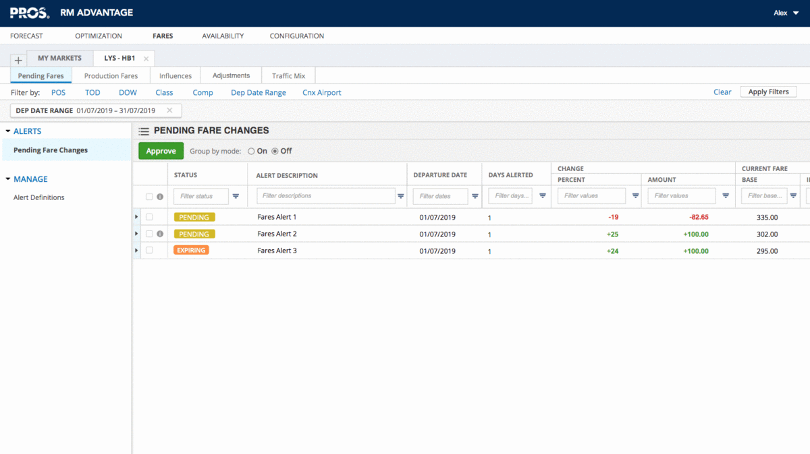
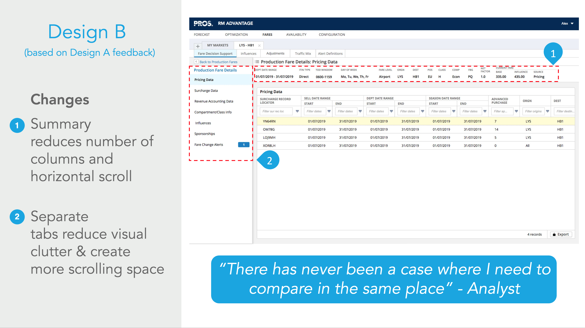

Overview
Problem: PROS software maximizes revenue for businesses through pricing optimization. The aim of this project was to redesign the interface for the software used by airline fare analysts, making it easier and more efficient to complete common daily tasks.
Solution: Conduct research to determine customer pain points within existing workflow. Work with other researchers and designers to prototype solutions that solve for the pain points. Incorporate feedback from user testing and requirements from Product Management and Development.
Duration: 10-week summer internship
Role: UX research and design
Task Diagramming
How are analysts using the current product?
Before diving into the redesign of the workflow, I created a task diagram to understand how people in different job roles interact with the software. Fare analysts (the primary users) use PROS software to investigate fare pricing changes and ensure that flights are priced appropriately. Administrators use the software less frequently, only entering the system every couple months for approval purposes or editing data in the database.
Through this task diagramming exercise, it became obvious which screens were the most vital to each role's job functions. My team worked together to determine areas where we may be able to simplify the workflow.

Identifying Pain Points
Before I arrived at my internship, my teammates conducted the first round of interviews with internal proxies for our customers. I listened to the interviews to pull out key themes. My team analyzed our collective notes and perceptions of what the most urgent problems were within the system. We determined that the following issues were essential to address within our prototype before testing:
- The existing workflow requires significant jumping between screens for analysts to investigate and adjust fares.
- Analysts need to repeat steps since basic fare information is only visible on certain screens.
- Analysts have all the information they need, but the system is visually cluttered.
Paper Prototyping
My team worked together to sketch solutions and determine the most efficient pathway during design sessions. Once we had come up with a revised workflow, I created a paper prototype that incorporated these changes. Pictured below are a few samples from the paper prototype.

The new workflow gives the user more space to view data. Empty tables do not appear, reducing visual clutter, and a summary at the top reduces cognitive load for the analyst, helping to avoid repeat steps.
The analyst can view influences applied to the fare to help determine why the fare has triggered an alert.


The analyst can adjust the fare without navigating to a different screen. This removes several steps in comparison to the old workflow.
Digital Prototype
I worked with a senior designer on my team to create a digital prototype within Axure. I specifically worked on tweaking the Alerts screen, which is where analysts can go to investigate fares whose prices have changed more than a defined threshold.
Iteration
Research Round 2
After creating the first version of the digital prototype, my team started round 2 of research with customers. We conducted interviews with several different airlines to gain feedback on our initial design and pick up on any pain points that we may have missed during the first round. During this round of research, we determined the need to further simplify one of the main screens, and we began putting together a script and tasks to A/B test two layouts of the screen.
I personally interviewed two fare analysts and took notes for several other interviews. I was responsible for compiling our research findings and presenting to the greater team. Pictured here is a slide from the deck summarizing our findings.
What I learned
During my internship, I gained practice writing interview scripts, creating paper prototypes, prototyping in Axure, and more. However, I think that I grew the most from working around constraints on a daily basis.
One lesson I'll always take with me is to check for system constraints before committing to a design. Certain designs were off the table from the beginning due to the effect they would have on system performance or because they were incompatible with existing architecture. Working around these constraints was an excellent exercise in thinking outside the box and prioritizing. Open communication with developers helped my team gather feedback on feasible, efficient designs during research.